Traffic Lanes
A traffic lane is a section of road for a single line of traffic.
Lane Markings
Lane markings on road surfaces help drivers know which part of the road to use and understand traffic rules.
Single Solid Yellow Line
A single solid yellow line marks the center of a road with two-way traffic. Do not pass a vehicle in front of you if there is only one lane of traffic going your direction and a solid yellow line on your side of the road.
Double Solid Yellow Lines
Do not pass over double solid yellow lines. Stay to the right of these lines unless you are:
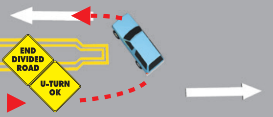
- In a high-occupancy vehicle (HOV) carpool lane that has a designated entrance on the left.
- Instructed by construction or other signs to drive on the other side of the road because your side is closed or blocked.
- Turning left across a single set of double yellow lines to enter or exit a driveway or private road or make a U-turn.
Two sets of solid double yellow lines spaced two or more feet apart are considered a barrier. Do not drive on or over this barrier, make a left turn, or make a U-turn across it, except at designated openings.
Broken Yellow Line
A broken yellow line indicates you may pass if the broken line is next to your driving lane. Only pass when it is safe.
Single Solid White Line
A single solid white line marks traffic lanes going in the same direction. This includes one-way streets.
Double Solid White Lines
Double solid white lines indicate a lane barrier between a regular use and a preferential use lane, such as a carpool (HOV) lane. You may also see double solid white lines in or near freeway on and off ramps. Never change lanes over double solid white lines. Wait until you see a single broken white line.
Broken White Lines
Broken white lines separate traffic lanes on roads with two or more lanes in the same direction.
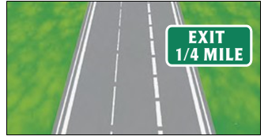
End of Lane Markings
Ending freeway and street lanes are usually marked with large broken lines. If you are driving in a lane marked with broken lines, be prepared to exit the freeway or for the lane to end. Look for a sign that tells you to exit or merge.
Yield Line
A yield line is a line of solid white triangles that shows approaching vehicles where to yield or stop. The triangles point towards approaching vehicles.
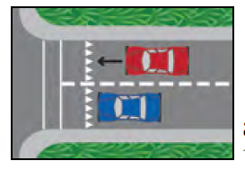
Choosing a Lane
Traffic lanes are often referred to by number. The left (or fast) lane is called the Number 1 Lane. The lane to the right of the Number 1 Lane is called the Number 2 Lane. Then the Number 3 Lane, etc.
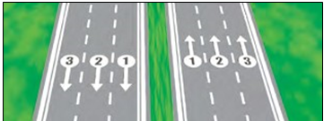
Example of numbered traffic lanes
Here are some tips for choosing a lane:
- Use the left lane to pass or turn left.
- Use the right lane to enter or exit traffic or when you enter the road from a curb or shoulder.
Changing Lanes
Before you change lanes:
- Signal.
- Check your mirrors.
- Check traffic behind and beside you.
- Look over your shoulder in the direction you plan to move to make sure the lane is clear.
- Check your blind spots for other vehicles, motorcyclists, and bicyclists. Do not let the vehicle drift into another lane.
- Be sure there is enough space for your vehicle in the next lane. It is not necessary to slow down before a lane change.
Stay in one lane as much as possible. Do not weave in and out of traffic. Last minute lane or direction changes may increase the risk of collisions. Once you start moving through an intersection, keep going. If you start to make a turn, follow through. If you miss a turn, keep driving until you can safely and legally turn around.
Types of Lanes
Passing Lanes
On a multilane road, the passing lane (far left lane) is the lane closest to the center divider and is used to pass other vehicles.
Carpool/High-Occupancy Vehicle (HOV) Lanes
An HOV lane is a special lane reserved for carpools, buses, motorcycles, or low-emission vehicles with decals. To use an HOV lane, one of these must apply:
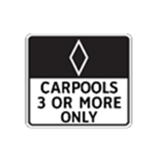
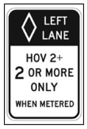
- You have a certain number of people in your vehicle. There will be signs at the on-ramp or along the road to tell you the minimum number of people. Road signs also list the hours when the HOV rules apply.
- You are driving a low emission or zero emission vehicle. You must display a special DMV-issued decal.
- You are riding a motorcycle (unless otherwise posted).
The road surface in a HOV lane is marked with a diamond symbol and the words Carpool Lane. Do not cross over double solid lines to enter or exit an HOV lane. Use designated entrances and exits.
Center Left Turn Lanes
A center left turn lane is located in the middle of a two-way street. It is marked on both sides by two painted lines. The inner line is broken and the outer line is solid. Use the center left turn lane to prepare for and make a left turn or U-turn. It is not a regular traffic lane or passing lane. You may only drive for 200 feet in the center left turn lane. To turn left from this lane:
- Look for other vehicles coming toward you in the center left turn lane.
- Signal.
- Look over your shoulder to check your blind spots.
- Merge completely into the center left turn lane so you do not block traffic.
- Turn when it is safe.
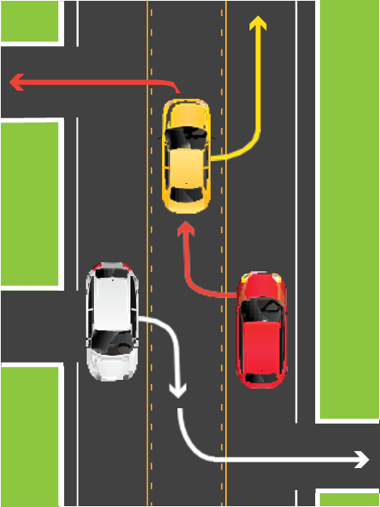
Example of Center Left Turn Lane
Turnout Areas or Lanes
Some two-lane roads have special turnout areas or lanes. Merge into these areas or lanes to allow cars behind you to pass.

You must use a turnout area or lane to let other vehicles pass when you are driving slowly on a two-lane road, where passing is unsafe, and there are five or more vehicles following you.
Bicycle Lanes
Bicycle lanes are for bicyclists only and run alongside vehicle traffic. They are typically marked by a single solid white line and signs. They are sometimes painted bright green to make them easier to see.
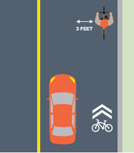
Example of shared roadway. Three (3) feet of distance must be maintained between the car and cyclist.
It is illegal to drive in a bicycle lane unless you are:
- Parking (where permitted).
- Entering or leaving the road.
- Turning (within 200 feet of an intersection).
There are multiple types of bike lanes and markings:
- Bike lane: Established along streets adjacent to vehicle traffic. Typically marked by a single solid white line that turns into a dash-line near an intersection.
- Buffered bike lane: Uses chevrons or diagonal markings to provide greater separation from traffic and on-street parking.
- Bike route: Uses bike route signs and shared road markings to designate a preferred route for bicyclists on streets shared with vehicle traffic.
- Bicycle boulevard: Prioritizes bicycle travel on streets shared with vehicle traffic.
- Separated bikeway: Is physically separated from motor vehicle traffic and for exclusive use of bicyclists. They are also known as a cycle track or protected bike lanes. The separation may include flexible posts, grade separation, inflexible barriers, or on-street parking.
- Shared roadway bicycle markings: Alert drivers that bicyclists can occupy the lane and help bicyclists maintain a safe lane position in traffic.
Note Check your blind spots before entering a bike lane. If you drive a motorized bicycle, use caution to avoid other bicyclists. Travel at a reasonable speed and do not endanger the safety of other bicyclists.
Turns
Right Turns
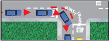
Example of a right turn.
To make a right turn:
-
Drive close to the right edge of the road.
- If a designated right turn lane is available, enter at the opening.
- You can drive in a bike lane within 200 feet from the turn. Check for bicyclists in your blind spots.
- Watch for pedestrians, bicyclists, or motorcyclists between your vehicle and the curb.
- Start signaling about 100 feet before the turn.
- Look over your right shoulder and reduce your speed.
- Stop behind the limit line. A limit line is a wide white line that shows the drivers where to stop before an intersection or crosswalk. If there is no limit line, stop before you enter the crosswalk. If there is no crosswalk, stop before you enter the intersection.
- Look both ways (left-right-left) and turn when it is safe.
- Complete your turn in the right lane. Do not turn wide into another lane.
Right Turn Against a Red Light
You may turn right at a red light after a complete stop unless there is a No Turn on Red sign. Follow the same steps listed above for right turns.
Right Turn Against a Red Arrow
You may not turn right if you are stopped at a red arrow light. Wait until the light changes to green before making your turn.
Right Turn at a Public Transit Bus Lane
It is illegal to drive, stop, park, or leave a vehicle in an area designated for public transit buses. Signs will be posted to indicate the lanes are for bus only use. However, you may cross a bus lane to make a right turn.
Right Turn onto a Road with a Dedicated Lane
A dedicated right turn lane does not merge into another lane and allows you to make a right turn without stopping. You may make your turn even if there is a red light for vehicles going straight through the intersection. If there is a traffic light or sign on the right curb of the right turn lane, you must obey that light or sign. Always yield to pedestrians in a crosswalk when turning.
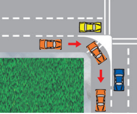
Example of a Right Turn into a Dedicated Lane
Left Turns
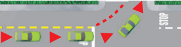
Example of a left turn.
To turn left:
-
Drive close to the center divider or into the left turn lane.
- Enter a designated left turn lane at the opening. Do not cross any solid line.
- Enter a two-way center left turn lane within 200 feet of the turn. Respect the right-of-way of any vehicle, bicyclist, or motorcyclist already in the lane. Always yield to pedestrians.
- Start signaling 100 feet before the turn.
- Look over your left shoulder and reduce your speed.
- Stop behind the limit line. If there is no limit line, stop before you enter the crosswalk. If there is no crosswalk, stop before you enter the intersection.
- Look both ways (left-right-left) and begin your turn when it is safe.
- Proceed into the intersection while turning to complete your turn in the left lane.
-
Do not turn the steering wheel too soon and enter the lane of oncoming vehicles.
- Keep your wheels pointed straight ahead until it is safe to start your turn. If your wheels are pointed to the left and a vehicle hits you from behind, you could be pushed into oncoming traffic.
- Accelerate smoothly during and after the turn.
- Allow the steering wheel to straighten in the new lane.
Left Turn Against a Red Light
You may turn left against a red light when you are turning from a one-way street onto a one-way street. Make sure there is no sign prohibiting the turn. Yield to other vehicles, pedestrians, or bicyclists who have a green light. Look both ways and turn when it is safe.
U-TURN
A U-turn is when you turn your vehicle around to go back in the direction you came. To make a U-turn, signal and use the left turn lane or far-left lane. You may make a U-turn:
- Across a double yellow line.
- In a residential district if no vehicles are approaching you within 200 feet.
- At an intersection on a green traffic light or green arrow, unless a NO U-TURN sign is posted.
- On a divided highway if a center divider opening is provided.
Never make a U-turn:
- Where a NO U-TURN sign is posted.
- At or on a railroad crossing.
- On a divided highway by crossing a dividing section, curb, strip of land, or two sets of double yellow lines.
- When you cannot see clearly for 200 feet in each direction.
- On a one-way street.
- In front of a fire station. Never use a fire station driveway to turn around.
-
In business districts (the part of a city or town where most offices and businesses are).
- Except at an intersection, or on a divided highway where an opening has been provided.
Examples of Turns
The descriptions below refer to the numbers next to the cars in the images. Watch for pedestrians, motorcycles, and bicycles between your vehicle and the curb. When making turns, there may be signs or arrows that indicate you can turn from or end in more than one lane.
- Left turn from a two-way street. Start the turn in the left lane closest to the middle of the street. To reduce the risk of collision, end the turn in the left lane closest to the middle of the street going in your vehicle’s direction.
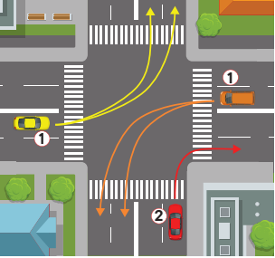
2. Right turn. Begin and end the turn in the lane closest to the right edge of the road. Do not swing wide into another lane of traffic.
3. Left turn from a two-way street onto a one-way street. Start the turn from the lane closest to the middle of the street (far-left lane). If there are three or more lanes in your direction of travel, you may end your turn in any lane that is open.
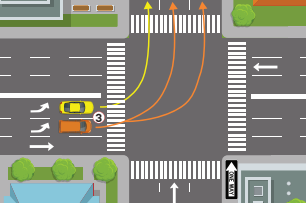
4. Left turn from a one-way street onto a two-way street. Start the turn from the far-left lane. To reduce the risk of collision, end the turn in the left lane closest to the middle of the street going in your vehicle’s direction.
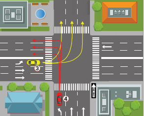
5. Left turn from a one-way street onto a one-way street. Start the turn from the far-left lane. Bicyclists can legally use the left turn lane for their left turns. If there are three or more lanes in your direction of travel, you may end your turn in any lane that is open.
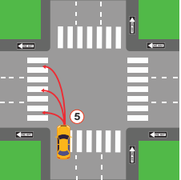
6. Right turn from a one-way street onto a one-way street. Start the turn in the far-right lane. If safe, you may end the turn in any lane.
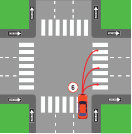
7. Turn at a “T” intersection from a one-way street onto a two-way street. Traffic going straight through the intersection has the right-of-way. You may turn either right or left from the center lane.
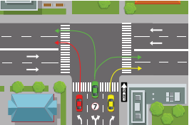
Braking
- Remove your foot from the accelerator and allow the vehicle to slow down. Lightly press the brake until you come to a full stop. Give yourself enough space and time to perform this maneuver.
- When stopping at a limit line, do not cross over the line. If stopping behind a vehicle, leave enough space to see their rear wheels.
Merging And Exiting
Merging
Highway traffic has the right-of-way. For more information, see Right-of-Way Rules: Who Goes First in Section 7. When you enter a highway, you will need to:
- Be in the proper lane on the on-ramp.
- Be at or near the speed of traffic.
- Merge into highway traffic when safe to do so. Do not stop unless absolutely necessary.
- Merge into a space large enough for your vehicle to safely join the lane.
- Use your mirrors and turn signals.
- Turn your head quickly to look over your shoulder before changing lanes or merging into traffic.
- Make sure you can stop safely by leaving three seconds of space between you and the vehicle in front of you.
- Make sure you do not cross over any solid lines when merging. If you need to cross several lanes, signal and cross them one at a time. Check your blind spots for vehicles, motorcyclists, bicyclists, and pedestrians each time.
Exiting
To exit a highway safely:
- Know your exit and be aware of when it is approaching.
- If you plan to change lanes, do so one at a time. Signal and look over your shoulder to check your blind spots.
- When in the proper lane, signal five seconds (approximately 400 feet) before you exit.
- Make sure you are at a safe speed to exit.
- Do not cross over any solid lines when exiting.
Crossing or Entering Traffic
When entering traffic from a full stop, signal and leave a large enough space to get up to the speed of traffic. To merge, enter, or exit traffic, you need a space that is:
- Half a block on city streets, which is about 150 feet.
- A full block on the highway, which is about 300 feet.
Even if you have a green light, do not start across the intersection if there are pedestrians or vehicles blocking your pathway.
When turning left, do not assume that an oncoming vehicle with its right turn signal on is turning before it reaches you. The driver may have their signal on by mistake or plan to turn just beyond you. Wait for the vehicle to start its turn before beginning the left turn.
Passing
You must judge whether you have enough space to pass whenever you approach:
- An oncoming vehicle or bicyclist.
- A hill, curve, intersection, or road obstruction. To safely pass, the hill or curve should be at least one-third of a mile ahead.
Before you pass, look ahead for road conditions that may cause other vehicles to move into your lane.
Do not pass:
- If you are approaching a hill or curve and cannot see if other traffic is approaching. This is very dangerous on one and two lane roads.
- Within 100 feet of an intersection, bridge, tunnel, railroad crossing, or other hazardous area.
- At crossroads and driveways.
- Unless you have enough space to return to your lane.
How to Pass
When you are going to pass on an open highway:
- Signal that you plan on passing.
- Look over your shoulder to check your blind spots.
- Drive into the passing lane.
- Speed up to pass the vehicle.
- Signal and return to your original lane.
You may pass on the right only when:
- An open highway has two or more lanes going in your direction.
- The driver ahead of you is turning left and you can safely pass on the right. Never pass on the left if the driver is signaling a left turn.
- You are on a one-way street.
Never drive off the paved or main-traveled part of the road to pass.
Being Passed
If a vehicle is passing you or signals that they plan on passing, allow the vehicle to pass. Maintain your lane position and your speed.